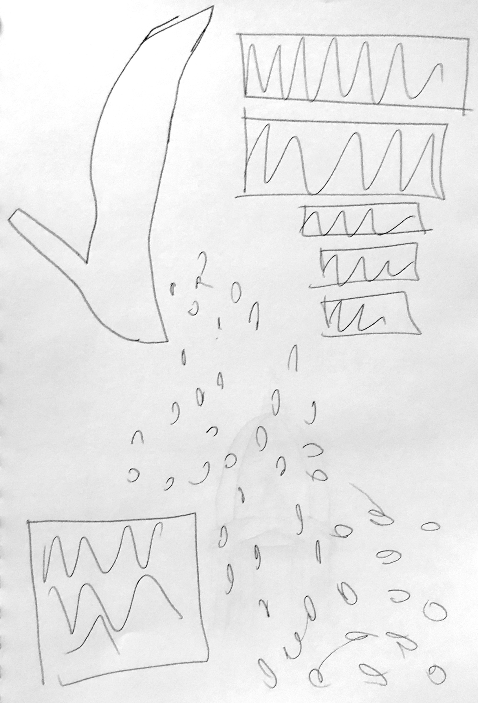
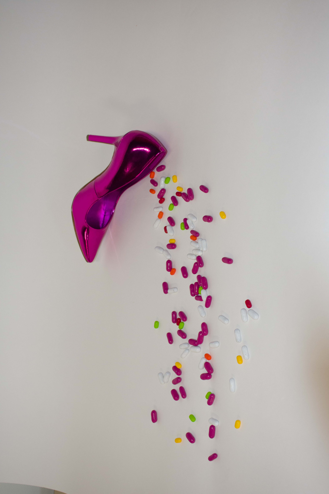
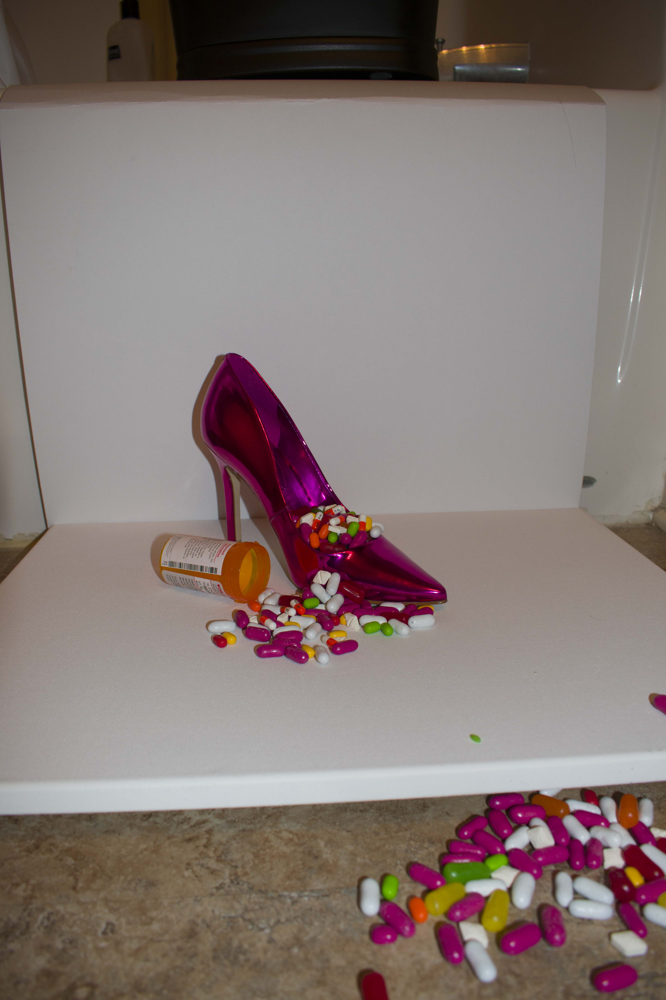
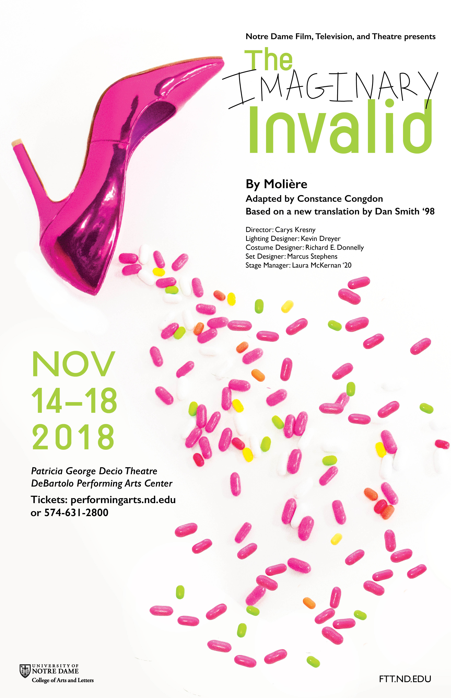

I currently work as the designer for Notre Dame’s Film, Television, and Theatre department. My most recent design was for the last show, The Imaginary Invalid. My process starts with a conversation with the director to get an idea of what their overall vision is for the mood of the show and how can I reflect that visually. For this show, the director wanted a playful and slightly absurdist look and to feature the pink shoe which played a role in the show. After establishing the direction I should go in, I start sketching concepts. After that, I photographed the shoe and fake pills in order to get an image for the poster.
  This is the final poster that I created. Throughout the process there is a lot of back and forth with the director to refine the final design. After it was finished, the posters were printed and hung around campus.
